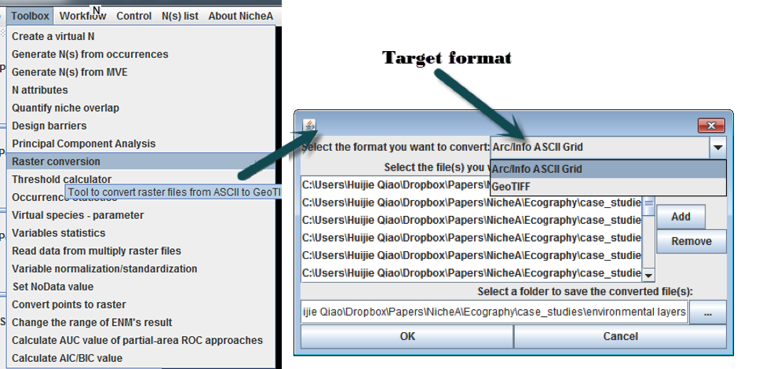
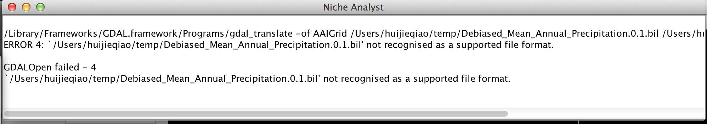

Conversion tool for raster file
The conversion tool utility (Fig. 1) is an additional application that can convert supported raster environmental variables to other formats for use in NicheA directly. Formats supported in NicheA come from GDAL, which are listed at http://www.gdal.org/formats_list.html.
Figure 1. Converting GeoTiff format to ASC format.

Sometimes GDAL can't convert some formats. When you watch the dialog in Fig.2, it means NicheA fails to convert all the files to the desired format. You can open the log dialog (Fig.3) to read the details (Fig.4) about this failure, or copy the command in the log form to re-run in a terminal.Figure 2. NicheA fails to convert all the files to the desired format.
Figure 3. The menu to view the log.
Figure 4. The log to interpret the failing reason.
